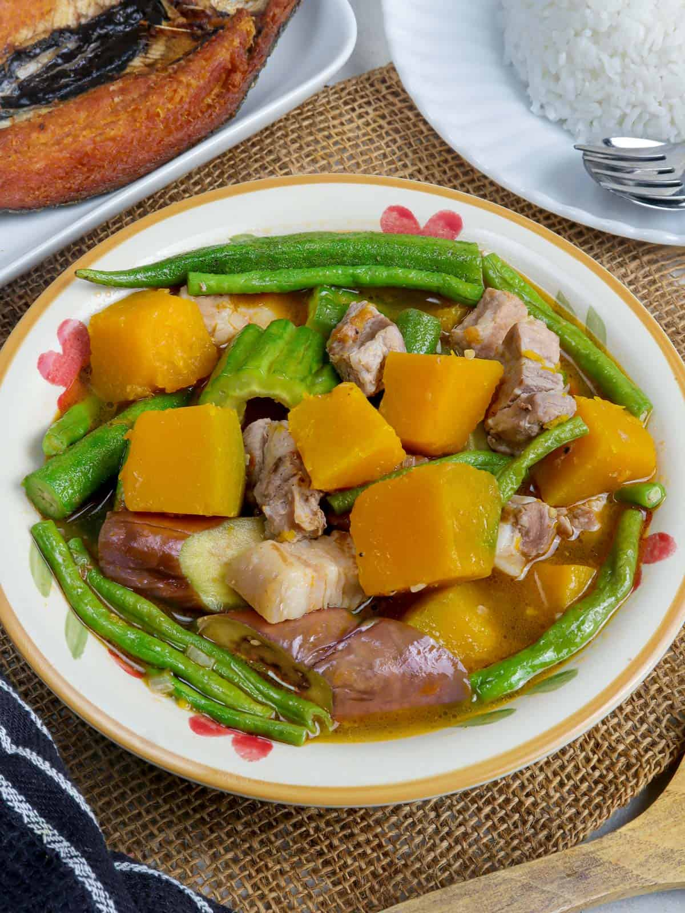
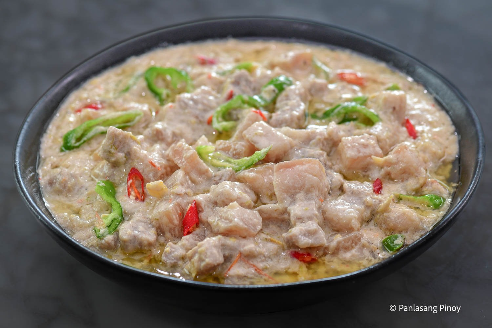
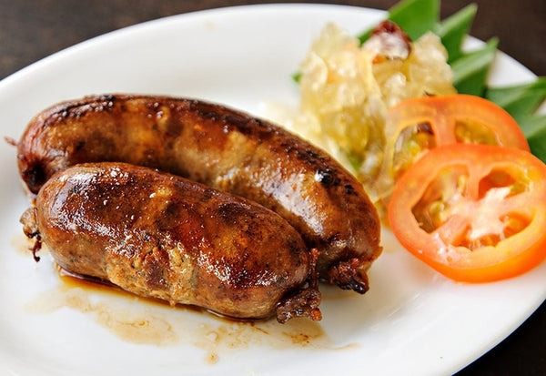
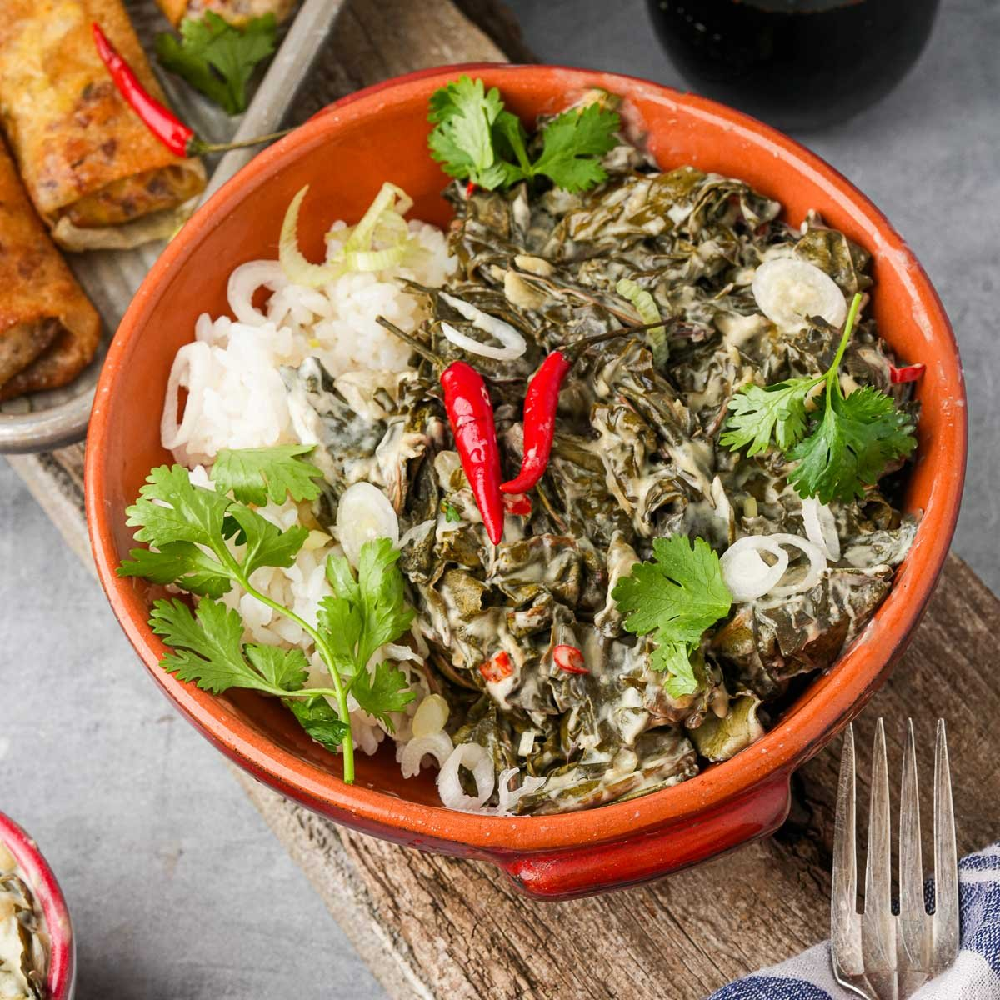
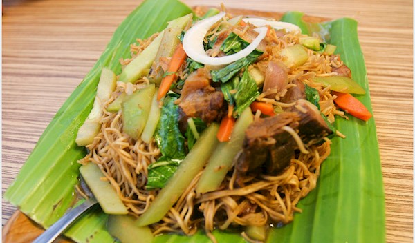

The rich flavors of Luzon's cuisine, which have been influenced by Spanish, Chinese, and American cuisine as well as indigenous customs, are widely recognized. Luzon cuisine, which is renowned for blending sour, savory, and sweet flavors, frequently combines a range of meats, fish, and vegetables with seasonings like coconut milk, vinegar, and soy sauce. Signature dishes include pancit habhab (stir-fried noodles served on banana leaves), Vigan longganisa (Ilocos sausages infused with garlic), laing (taro leaves cooked in coconut milk and chili), and pinakbet (a vegetable medley with bitter melon, squash, and shrimp paste). These recipes highlight Luzon's focus on regional ingredients and bright tastes.
| Food | Image | Description |
|---|---|---|
| Pinakbet |  | Squash, string beans, eggplant, bitter melon, and shrimp paste (bagoong) are the main ingredients of this vegetable dish. In the Ilocos region, it is a favorite. |
| Bicol Express |  | This fiery stew, which comes from the Bicol region, is prepared with pork, shrimp paste, coconut milk, and a lot of jalapeño peppers. It is renowned for having a spicy, rich, and creamy flavor. |
| Vigan Longganisa |  | This sausage kind is from Vigan, Ilocos Sur, and is renowned for its slightly sour and garlicky flavor. For breakfast, it's frequently eaten with fried rice and an egg. |
| Laing |  | Laing, another Bicolano delicacy, is made from dried taro leaves cooked with pig or shrimp in coconut milk and flavored with jalapeño peppers. This meal is specific to the area and is tasty and spicy. |
| Pancit Habhab |  | This Lucban, Quezon-based noodle dish is usually consumed without utensils and is served on a banana leaf. Stir-fried noodles, veggies, and occasionally meat or seafood are used to make it. |